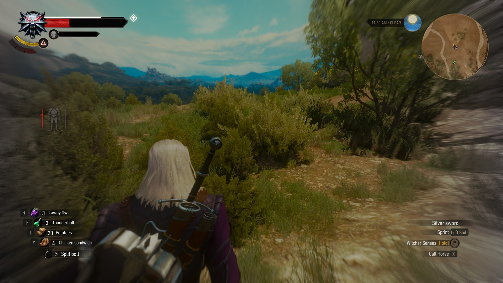

For part A, I added a third light comming from the right side with a different color. The Taurus has the standard Phong shader. The box has both a texture applied to it and is affected by lighting. For the sphere, each vertex is displaced along its normal at a random distance. The color is based off of the amount it is displaced. The sphere is moving on a sin curve, and the displacement amounts are constantly being updated.
Part A: PartAFor part B, I implemented a Gaussian Blur with kernel size of 7, and sigma of 2. It uses the two-pass method for better efficiency.
Part B: PartBFor part C, I changed it so that it uses 4 states, and used the Perfect Spirals rules by David Griffeath.
Part C: PartC
Part D:

I chose to look at this screen shot from The Witcher 3. This effect happens when you activate whats called
"witcher senses." When this effect activates, your senses are heightened, and you are able to track things better.
The camera zooms in a little bit, and the screen starts to blur outward from the center of your view.
As the camera moves, the effect stays centered on the screen. It seems to also distort your vision a bit
like a fisheye lens. I like the effect, as it does a good job of giving a visual representation of having your senses distorted.
I would guess that you could achieve this effect using a filter kernel. The effect changes based on what part of the screen
it is on though, and I don't think a standard filter kernel would be able to do that. Its possible the kernel changes,
or they could have used a single large kernel applied to the whole image.